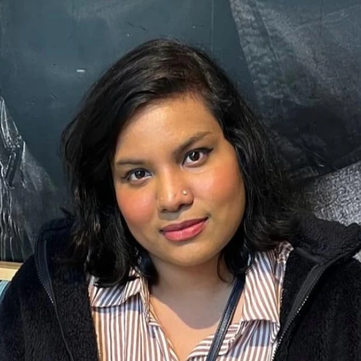

🕵️♂️ Human Machine/AI Interaction (HMAI) Wing
In our IPE curriculum, the dept. offer various courses spanning ergonomics, human factors engineering, behavior studies, psychology, and more. We've identified a considerable opportunity for multidisciplinary research by integrating these disciplines with AI or computer-related domains, particularly in HCI with AI. Surprisingly, there has been limited activity in this field in Bangladesh. Given the rapid growth of human-computer interaction (HCI), we have collectively decided to explore and advance in this area with AI. Our works are focused on:
- Developing and Evaluating Human-AI Interaction Systems
- Developing Human Machine/Robotics Interaction Systems
- Evaluating Computer Human Interaction Systems
- Exploring AI-assisted HMI/HCI/CHI Systems
- Ergonomics, Safety and Bias in Interaction Systems
Wing Members

MS (CSE), Harvard University


Publications
-
Exploring Large Language Model Systems Design Perspective Using Cognitive Ergonomics
Azmine Toushik Wasi ICML'24 LLMs and Cognition Workshop ▪ Accepted ▪ HCI ▪ HMAI [arXiv]
-
Exploring Bengali Religious Dialect Biases in Large Language Models with Evaluation Perspectives
Azmine Toushik Wasi, Raima Islam, Mst Rafia Islam, Taki Hasan Rafi, Dong-Kyu Chae CHI'24 HEAL Workshop ▪ Accepted ▪ HCI ▪ HMAI [arXiv]
-
LLMs as Writing Assistants: Exploring Perspectives on Sense of Ownership and Reasoning
Azmine Toushik Wasi, Mst Rafia Islam, Raima Islam CHI'24 In2Writing Workshop ▪ Accepted ▪ HCI ▪ HMAI [arXiv]
-
Ink and Individuality: Crafting a Personalised Narrative in the Age of LLMs
Azmine Toushik Wasi, Raima Islam, Mst Rafia Islam CHI'24 In2Writing Workshop ▪ Accepted ▪ HCI ▪ HMAI [arXiv]